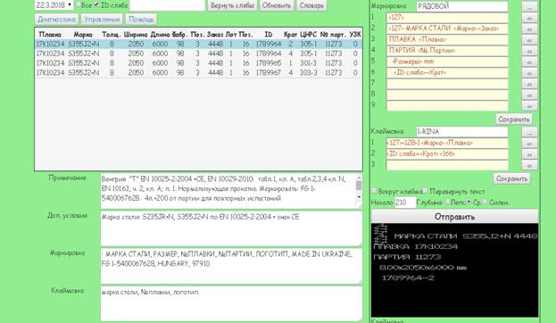

Описание программы КММ.
Программа предназначена для управления клеймовочно-маркировочными машинами левого ТЛЦ-2 фирмы Magnmag. КММ находятся на левом и правом потоке участка резки и на термоотделении.
Запуск происходит путем нажатия на ярлык КММ на рабочем столе. Происходит запуск сервера и запуск Google Chrome на главной странице.

Рисунок 1 –Главная страница программы.
В верхней части расположены кнопки управления и поля ввода даты и номера сляба. Ниже расположена таблица, в которой отображены возможные листы для маркировки. Под таблицей находятся 4 поля отображающие информацию о выбранном листе.
В левой части находятся органы управления выбора и редактирования шаблонов клеймовки и маркировки. В нижней правой части экрана находится кнопка “Отправить”, органы управления для задания параметров клеймовки и марикровки, а также изображение маркировки на листе в соответствии с выбранным листом и выбранными шаблонами.
Работа с программой.
Чтобы подготовить лист к отправке необходимо выбрать лист из списка в таблице, выбрать шаблон маркировки и шаблон клеймовки, выбрать параметры маркировки(вокруг клейма, перевернуть текст и т.д.) и нажать кнопку “Отправить”.